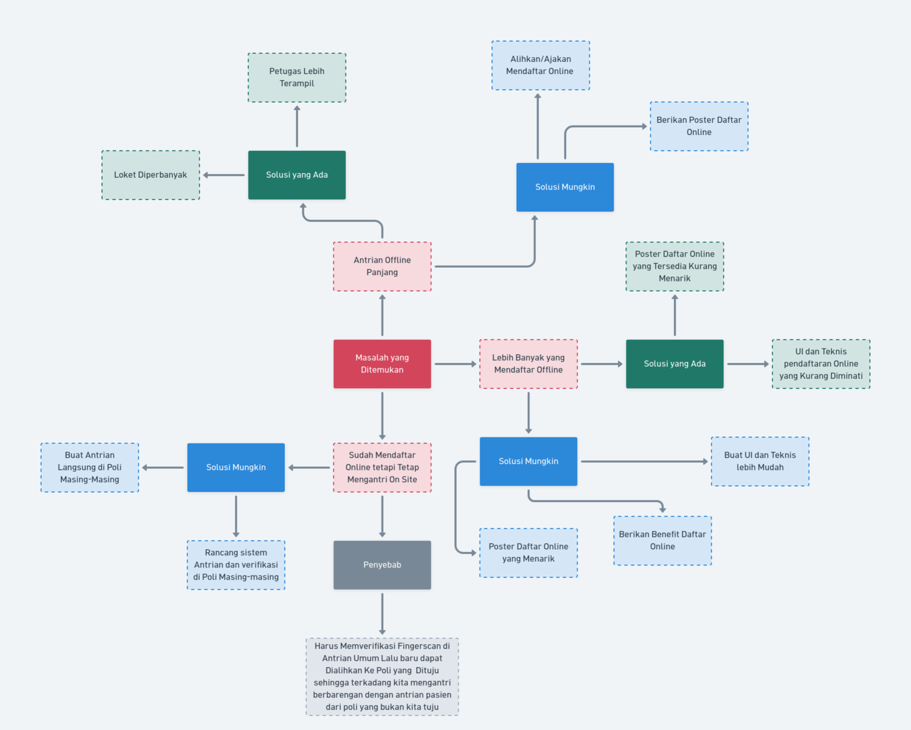

Pemetaan masalah antrian rumah sakit dan kerangka solusi berbasis analisis empati pengguna BPJS.
Diagram 01
Mindmap Masalah & Solusi
Pemetaan masalah utama yang ditemukan di RS Bhayangkara Polri Kramat Jati: antrian panjang, rendahnya adopsi pendaftaran online, serta solusi yang ada dan solusi yang mungkin diterapkan.

Diagram 02
Starburst Kerangka Solusi
Framework starburst untuk menganalisis siapa yang terdampak, apa masalahnya, mengapa penting, di mana solusi diterapkan, dan bagaimana cara mewujudkannya di RS Bhayangkara Polri Kramat Jati.
👥
Who
Seluruh pasien BPJS Umum yang ingin mendaftar atau reservasi online di rumah sakit umum agar mendapatkan antrian lebih cepat.
Starburst
RS Bhayangkara · Kramat Jati
⚙️
How
Membuat UI dan teknis pendaftaran lebih mudah diakses oleh semua kalangan usia
Memangkas antrian umum rumah sakit langsung ke Poli yang dituju, tanpa melewati antrian verifikasi umum
❓
Why
Pendaftar online menjadi lebih sedikit karena usia lanjut sulit untuk mengakses sistem digital
Total waktu pendaftar online tetap lama karena harus melewati antrian umum
📋
What
Pasien dengan usia lanjut umumnya memiliki kesulitan dalam mendaftar atau reservasi online
Mendaftar online atau offline menghabiskan waktu yang sama (perbedaan tidak signifikan)
Mendaftar online harus tetap mengantri di antrian umum, sama seperti daftar offline
📍
Where
Rumah Sakit Bhayangkara Polri Kramat Jati
Jakarta Timur — fasilitas kesehatan rujukan BPJS untuk peserta umum di wilayah Kramat Jati dan sekitarnya.